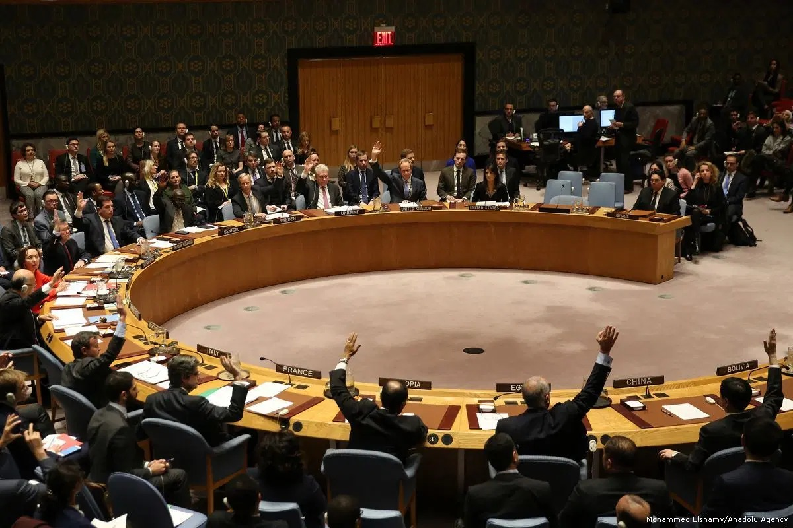
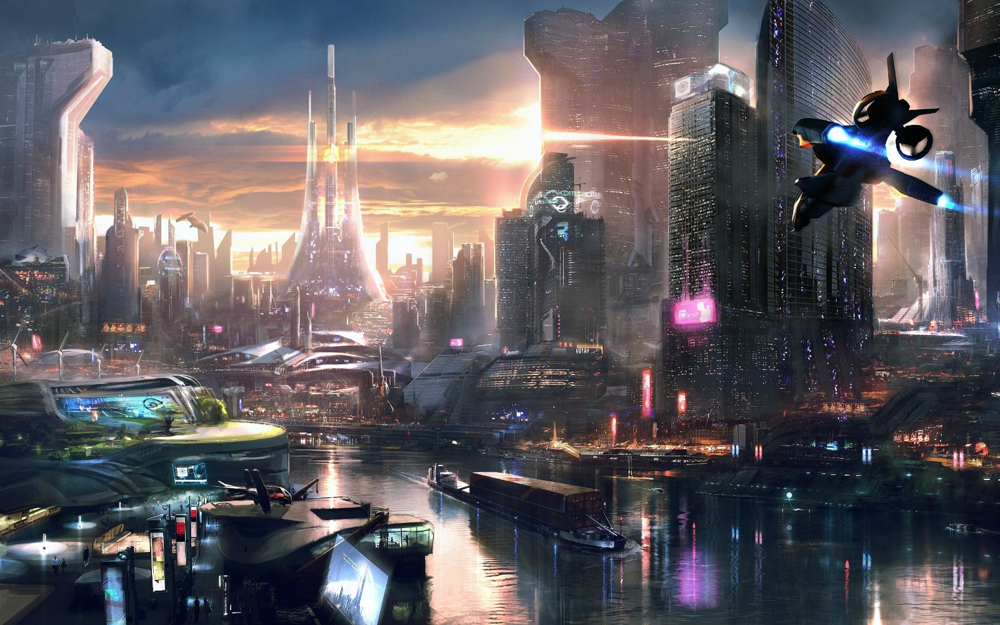

TL;DR
Our idea could potentially cause economic problems and collapse as well as several political issues. However, it would improve current mining methods by being safer for humans, more environmentally friendly, and more efficient, and also open up opportunities for the advancement of the human race through a large infrastructure of robots and a huge amount of resources
Con: economic problems
MRRM would render people working in the mining industry jobless. Because of the sudden price drop of minerals, the commodities market could plummet, and adjusting to this new economy would even cause people outside of the mining industry to struggle financially. In the short run, MRRM could cause global economies could enter a depression.
Con: Political Issues
Since the initial construction of MRRM would be a massive project, contributions for materials, energy, and workers would need to be divided among multiple nations. Once the technology is implemented and starts to ship minerals mined from the asteroids back to Earth, there could be conflicts among nations involving the ownership of these resources. If these conflicts are not settled properly, they could possibly lead to an international war.
Pro: Improvement Upon Current Mining Methods
Our technology would eliminate almost all environmental and safety concerns of current mining methods. In the most popular mining methods such as open pit mining and underground mining, harmful substances from the mined rock are exposed to the environment, contaminating air and water sources. Habitat destruction at mining sites and the carbon emissions of mining machines are also environmental issues caused by mining. MRRM would not have these downsides; the harmful substances emitted from minerals, as well as the carbon emissions of our robots, would be released into outer space, where they have no environmental impact on earth. The health risks of working as a miner, such as hearing loss and exposure to dangerous substances, are also nonexistent in our technology, since robots would perform these dangerous-to-human activities instead.
Pro: space advancement
Throughout the course of human history, there have been many radical advancements that have redefined the way that humans live. For example, the invention of computers has created many possibilities for humans that were unimaginable in the past. Making this advancement to space will have the same impact. Eventually, humans will suffer overpopulation issues, which will be entirely solved by colonizing other planets. Our technology could contribute to space advancement in two ways - it would provide us with enough resources to undertake large-scale projects, and it could deploy robots to desired planets, to build shelters which humans could move into immediately. It would also spread awareness for the potential of space exploration.
 The stock market crashing after mining jobs are lost
The stock market crashing after mining jobs are lost

Politicians arguing over collaboration
MRRM is a viable clean mining opportunity

MRRM advances our civilization greatly.